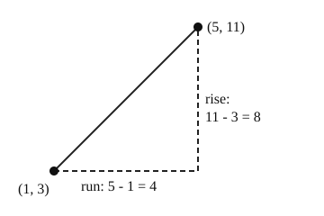

Part of Straight Lines From Two Points. Answer in the chat (1: ..., g: c), add sure or guess after any answer, and say done when finished.
Last time: what is the slope of the line through (1, 3) and (5, 11)? You said a) 2, and it is.

With only two points and no grid, you cannot count steps. But the rise is just how much y changed, and the run how much x changed (notes 2):
m = (y₂ - y₁) / (x₂ - x₁)
Subtract in the same order on top and bottom. Which point you call first does not matter.
Worked example: (2, 1) and (6, 13).
Q1. What is the slope of the line through (1, 2) and (4, 11)?
3
Q2. In your own words: for (-2, 5) and (2, -3), why do you get the same slope whichever point you call first?
swapping the points flips the sign of both the top and the bottom, -8/4 or 8/-4, so the two minus signs cancel out and it is -2 either way
Q3. Sam finds the slope through (3, 7) and (5, 1) as (7 - 1) / (5 - 3) = 3. What is wrong?
he took the y values in one order (7 - 1) and the x values in the other (5 - 3). In the same order it is (1 - 7) / (5 - 3) = -6 / 2 = -3, and the line goes down to the right
The line y = 2x + b goes through (3, 10). What is b?
c (guess)